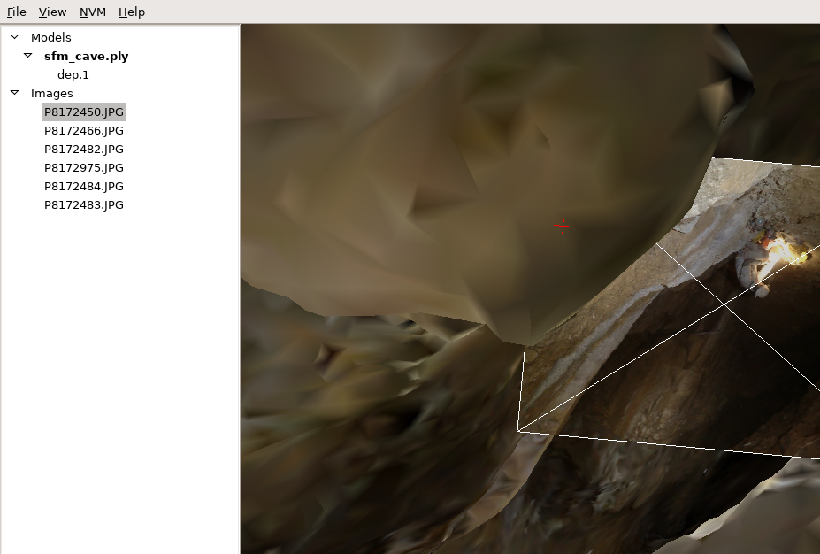
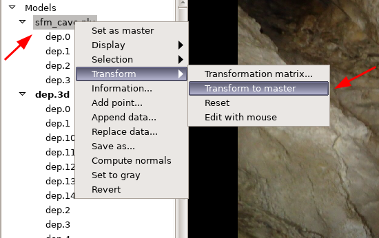
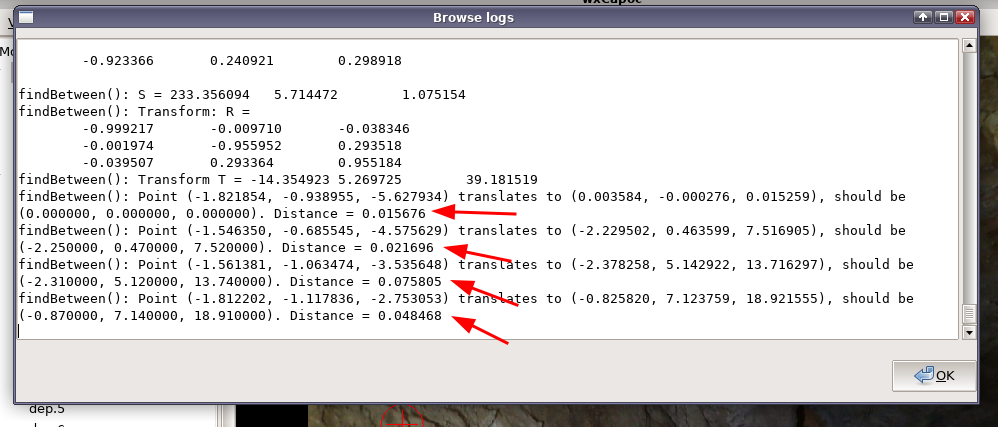

Capoc (Cave Point Clouds and Meshes) is a tool for immersive browsing of 3D cave models, registering models and taking virtual measurements from within the model.
This tutorial serves as documentation of Capoc until something better is written. Since the browsing function is rather intuitive, it focuses on registration (ie. aligning a SfM model with a real-world cave survey polygon) and taking virtual measurements.
Download capoc-windows.zip and extract it to a convenient location. Capoc does not need installing.
Download the example data coming along with this tutorial: capoc-example.zip. Extract the archive contents to a convenient location.
Open the top menu and select File / Open model. Select the sfm_cave.ply from the example data set.
Again go to the top menu, this time selecting File / Open NVM. Choose the NVM file example.nvm from the nvm subdirectory of the example data set
If you click on Images in the left pane of the main window, a list of files should appear. Double click the first file P8172450.JPG. A photograph from our example cave should appear in the right pane.
Now right click the image file name and select Assume pose
You should see a 3D view of the cave. Holding left mouse key pressed, drag mouse around the window to change viewing angles. You can also use a/s/d/w keys to navigate the model. If you step back (pressing s), you will notice the model is actually upside down. To fix it, we will align the model to a real world cave survey, locating four survey stations on the SfM photographs.
Again double click the image file name. Notice the survey station marking on a rock in the bottom right corner of the picture. Using right mouse button, drag the red cross onto this marking. Then press and hold shift, and holding the key right-drag so that the range indication (the circle around the cross) is only slightly bigger than the cross itself.
Now go to the top menu and select NVM / Reproject pixel
If all goes well, the cursor will turn green and the status bar at the window bottom should indicate some 3D coordinates. After the reprojection, the cursor might move slightly or stay in the same place. At this stage, either is fine.
If it is not the case and the status bar reads Reprojection failed, you need to reposition the cursor - and probably increase the reprojection range (ie. make the circle around cursor bigger). After that, select NVM / Reproject pixel again.
Now go to the left pane of the main window and find the sfm_cave file within the Models group. Right-click the file name to open a menu. Select Add point.
In the newly open window, name this point dep.1 (the name is very important). Click OK to save the point.
Double click P8172466.JPG. Locate the "0" point marking (near the middle of right edge). Move the reprojection cursor to this point (with right-dragging). Again use NVM / Reproject pixel and Add point to find and store 3D coordinates. Store this point as dep.0
You need at least four points to define an affine transformation, so still two to go. Double click P8172482.JPG and notice another surveying station near the middle of the top edge. Reproject this point and save it as dep.2
The last example point is located on P8172975.JPG. There is a small "3" on the rock not far from the bottom left corner. Reproject this point and save it as dep.3
Use File / Open model... and load the cave survey file from svx subdirectory (the filename is dep.3d). This file contains real world coordinates for surveying stations.
Now if you browse the point list, it will become clear why the point names were so important: the names we had used match exactly the station names occuring in dep.3d
Right click dep.3d in the left pane. When a menu opens, select Set as master. This lets capoc know which of the loaded models is the real world (in terms of coordinate systems).
Now right click sfm_cave.ply and select Transform / Transform to master
Seemingly nothing interesting happened. However, right click P8172466.JPG and select Assume pose. You will see that the cave model is now rotated and scaled to match the imported survey.
Click View / Message log to see more detailed information on the transformation process.
Select View / Xsect. Zoom in using the = key (or View / Zoom in a couple of times). Right click somewhere on the cross section and drag the mouse, holding right mouse button pressed - a straight line will appear. This is how simple virtual measurements in Capoc are made. You can see the line length and orientation on the status bar (bottom of the window).
Now press and hold Shift. With Shift pressed, right click somewhere on the wall within the cross-section and holding both the right mouse button and shift, drag the mouse. With this action, a piece of the 3D model is marked with yellow colour.
Select View / Caver. If you back away a little (with s key), you will notice the selection is also visible on the perspective view.
Now we will measure the average orientation of the selected part of the model. Right-click sfm_cave.ply. Select Selection / Fit plane.
The fitted plane is indicated on the 3D view with randomly scattered blue dots and a blue line representing the normal vector. Verify if makes sense, and if so, take notice of the readings visible on status bar.